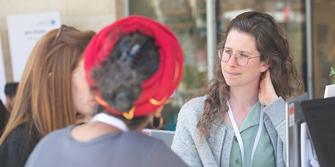
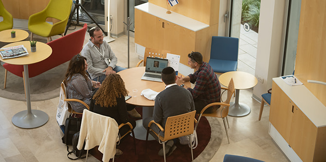
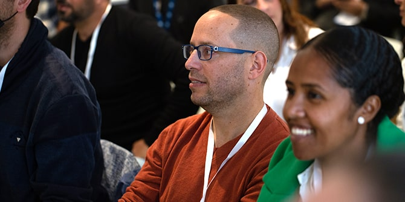
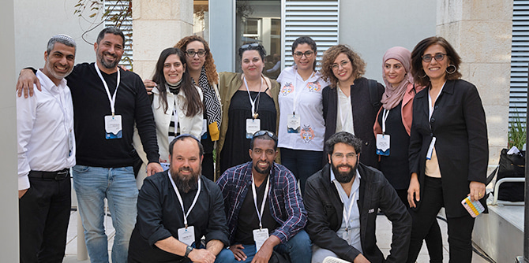
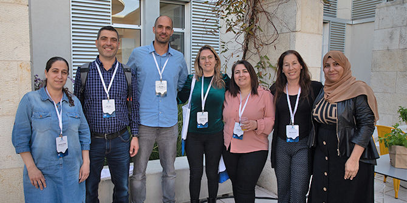
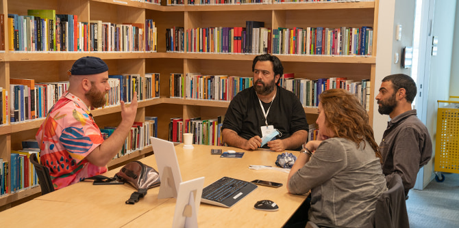

"המטרה העיקרית של יום העמיתה והעמית היא יום לימוד משותף שיראה לכל אחת ואחד מאיתנו שאנחנו חלק ממשהו גדול ומשמעותי", אמר בפתיחת היום מנכ"ל קרן מנדל-ישראל משה ויגדור. ואכן, יום העמיתה והעמית – המפגיש את כל עמיתות ועמיתי מנדל, מכל התוכניות ומכל היחידות – הוא אירוע ייחודי בלוח השנה המנדלי, ויוצר עבורם מרחב ייחודי להיכרות עם הקרן, עם עשייתה ועם מטרותיה. כמו כן הוא מאפשר, באמצעות חוויית למידה משותפת, התחלה של יצירת שותפויות וחיזוק קהילת מנדל: עמיתים ועמיתות מכל היחידות ומכל התוכניות.
יום העמיתה והעמית השנה עמד בסימן ״לוקליות״, ועסק במנהיגות כפי שהיא משתקפת דרך הפריזמות השונות של תוכניות הקרן ובפרשנויות השונות המוענקות לה במרחבי ההשפעה של כל אחת מהן. נקודת המבט התמקדה הן במרחבים הלוקליים – הפיזיים והמטאפוריים: הגאוגרפיים, התרבותיים, התפיסתיים והערכיים – והן במבט-על: בשאלות המנהיגות הגדולות המעסיקות כל אחד ואחת מהעמיתים והעמיתות בתוכניות מנדל.
לאחר התכנסות ופעילות היכרות התפצלו כ-300 המשתתפים לקבוצות למידה קטנות המורכבות מעמיתים ומעמיתות מתוכניות שונות, לדיון על טקסטים מכוננים – פרוזה ושירה – בהם גם קטע מספרו של מורטון מנדל הסוד טמון באנשים.

אחר כך התקיימו שלושה מופעים במקביל, לבחירת המשתתפים: יצירות אמנות העוסקות בשאלות ובמתחים שונים, ומשקפות אתגרים פיזיים, פסיכולוגיים, גאוגרפיים וחברתיים בישראל:
במתכונת של מושבים מקבילים הציגו היחידות ותוכניות המנהיגות של הקרן – באמצעות עמיתות, עמיתים, חברי סגל ומנהלים – את הנושאים והאתגרים המעסיקים אותן, דרך פריזמה של לוקליות.

עמיתים מבית ספר מנדל למנהיגות חינוכית ואנשי הסגל שלו הנחו ארבעה מהמושבים:

עמיתים וחברי סגל ממרכז מנדל למנהיגות בנגב הנחו שלושה מושבים:

עמיתים וחברי סגל ממרכז מנדל למנהיגות בצפון הנחו שלושה מושבים:

עמיתים וחברי סגל ממכון מנדל למנהיגת הנחו חמישה מושבים:

בסיום היום הנחה שי צברי, עמית בתוכנית מנדל למנהיגות בתרבות יהודית, מעין תפילה משותפת של כל העמיתים וחברי סגל מנדל.
העמיתות והעמיתים הביעו שביעות רצון רבה מהיום המשותף וסיפרו שהוא אפשר להם להכיר טוב יותר את חבריהם מהתוכניות האחרות ואת תחומי הפעילות והעשייה של הקרן, ובעיקר – הגדיל את תחושת השייכות שלהם לקרן ואת ההרגשה שכל אחד מהם הוא "חלק ממשהו גדול". "זה מרשים, מבחינת המגוון של האנשים שנמצאים פה, שבאים מעולמות שונים, ובעיקר החיבורים הטבעיים שנוצרים פה", אמר יאיר גולן, עמית בתוכנית מנדל למנהיגות אזורית בצפון. "אני רק רוצה שהדגם הזה שקורה פה יקרה גם בחוץ, ואולי הרבה יותר טוב ממה שנראה עכשיו" אמרה חני יצחקי שפטייב מתוכנית מנדל למנהיגות אזורית בעוטף עזה, בסיום היום.
{kind=link}
{kind=link}
{kind=link}
{kind=link}
{kind=link}
{kind=link}